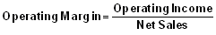

A ratio used to measure a company's pricing strategy and operating efficiency.
Calculated as:
Operating margin is a measurement of what proportion of a company's revenue is left over after paying for variable costs of production such as wages, raw materials, etc. A healthy operating margin is required for a company to be able to pay for its fixed costs, such as interest on debt.
Also known as "operating profit margin" or "net profit margin". Operating margin gives analysts an idea of how much a company makes (before interest and taxes) on each dollar of sales. When looking at operating margin to determine the quality of a company, it is best to look at the change in operating margin over time and to compare the company's yearly or quarterly figures to those of its competitors. If a company's margin is increasing, it is earning more per dollar of sales. The higher the margin, the better.
For example, if a company has an operating margin of 12%, this means that it makes $0.12 (before interest and taxes) for every dollar of sales. Often, nonrecurring cash flows, such as cash paid out in a lawsuit settlement, are excluded from the operating margin calculation because they don't represent a company's true operating performance.
{kind=link}